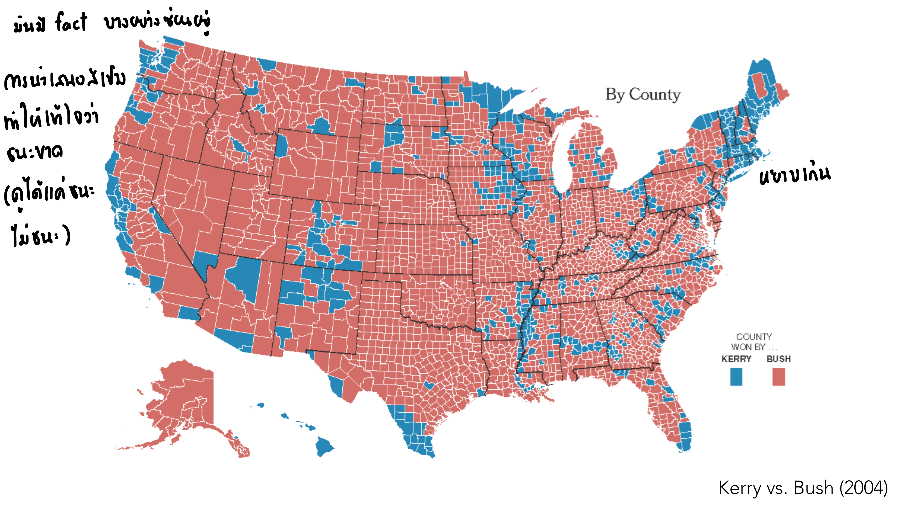
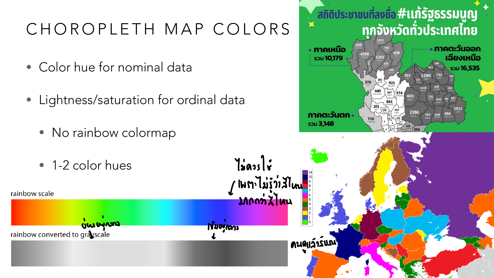
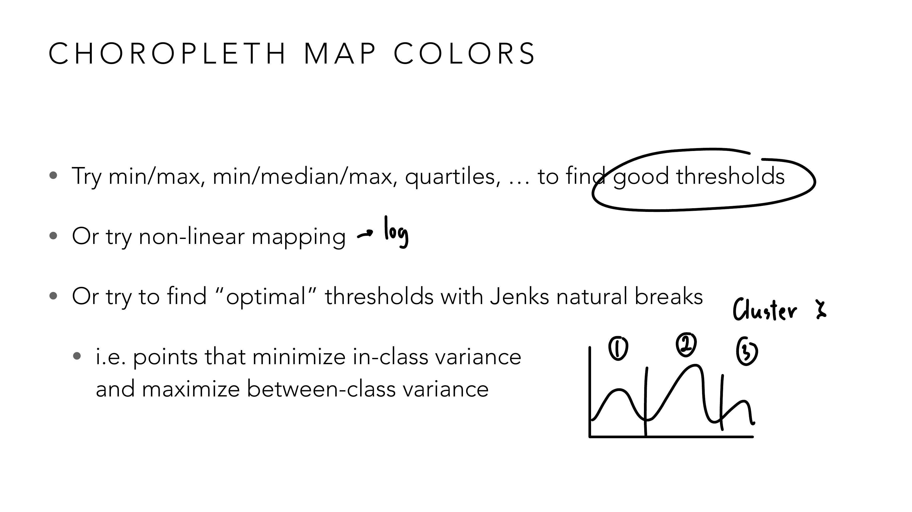
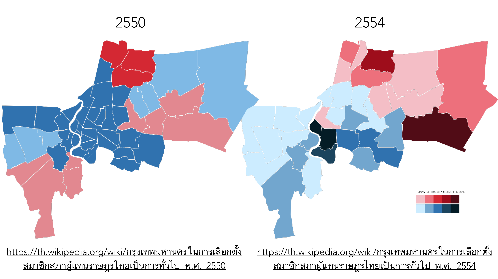
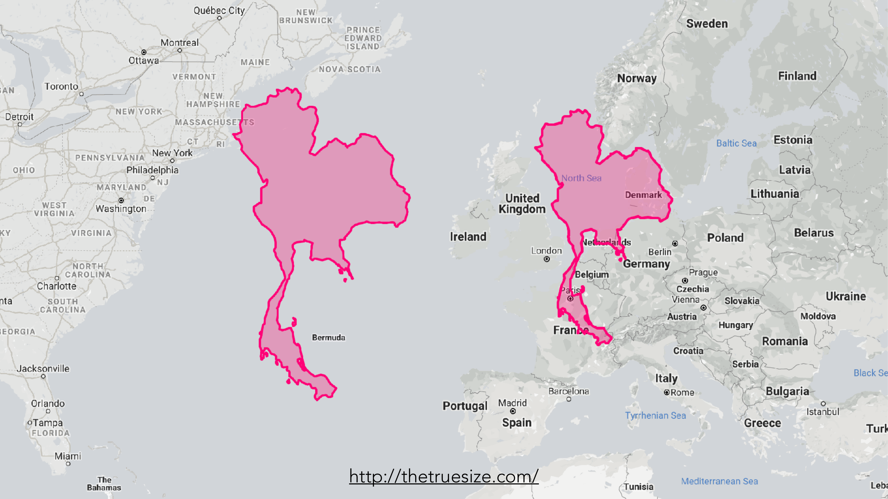
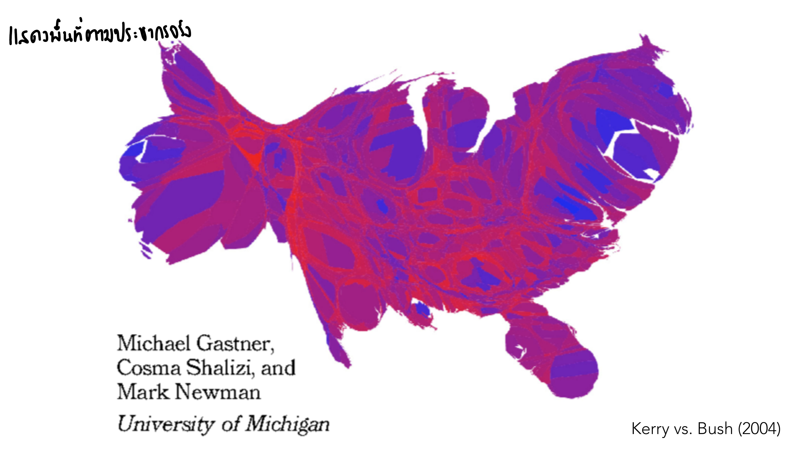
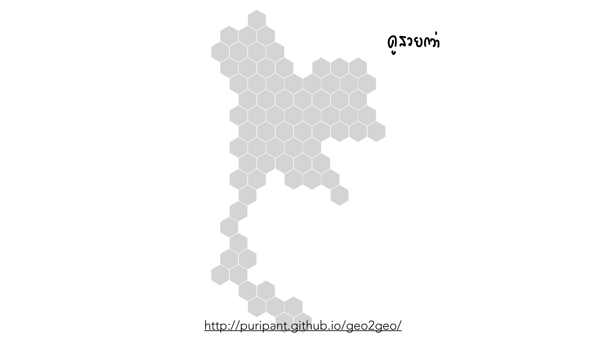
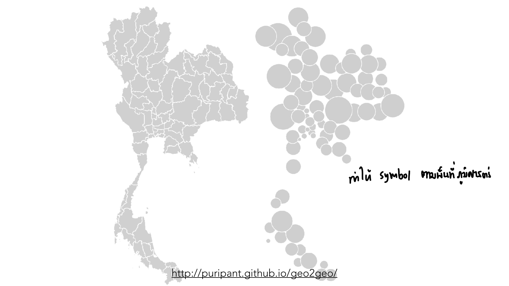

vis-8-spatial-geographical.pdf
Lesson 7 จบด้วยคำถามเปิด "Spatial & Geographical Data Vis = Map?" — บทนี้ตอบคำถามนั้น: แผนที่เป็นแค่ทางเลือกหนึ่งในการแสดงข้อมูลเชิงพื้นที่ ไม่ใช่คำตอบเดียวเสมอไป และแม้จะใช้แผนที่จริง ก็มีวิธีเลือก visual variable ผิดได้หลายแบบ อาจารย์ใช้ตัวอย่างเลือกตั้งสหรัฐฯ 3 ครั้งซ้ำหลายรอบเพื่อเปรียบเทียบเทคนิคต่าง ๆ บนข้อมูลชุดเดียวกัน.
ข้อมูลเชิงพื้นที่มักมีมากกว่า 3 มิติ (lat, long, + ตัวแปรอื่นอีกอย่างน้อย 1) — ถ้าเลือกทำเป็นแผนที่ 2 พิกัด (lat/long) จะใช้ position ไปกับ 2 มิตินั้นทันที เหลือแค่ visual variable อื่น (สี ขนาด) มาเข้ารหัสมิติที่เหลือ — บางครั้งการยุบรวม/aggregate ข้อมูลเชิงพื้นที่เป็นชาร์ตธรรมดา (เช่น bar chart ตามภาค) กลับสื่อสารได้ตรงกว่าการยัดทุกอย่างลงแผนที่จริง โดยเฉพาะเมื่อคำถามที่ต้องการตอบไม่ใช่ "ที่ไหน" แต่เป็น "เท่าไหร่".
Choropleth map ระบายสีทั้งพื้นที่ (จังหวัด/รัฐ/ประเทศ) ตามค่าข้อมูล — ตัวอย่างคลาสสิกที่อาจารย์ใช้ซ้ำหลายรอบตลอดบทคือผลเลือกตั้งสหรัฐฯ:

ในการเลือกตั้งจริงปี 2004 คะแนนเสียง Kerry (น้ำเงิน) กับ Bush (แดง) สูสีกันมาก แต่แผนที่นี้ดู "แดงท่วมประเทศ" เพราะพื้นที่ชนบทที่ Bush ชนะกินพื้นที่ทางภูมิศาสตร์เยอะกว่ามาก ทั้งที่มีประชากร/คะแนนเสียงน้อยกว่าเมืองใหญ่ที่ Kerry ชนะมาก — โน้ตลายมือกำกับไว้ว่า "การนำเสนอแบบนี้ทำให้เข้าใจผิดว่าใครนำ (ดูได้แค่แพ้/ชนะ ไม่เห็นคะแนนจริง)" นี่คือกับดักที่เรียกกันว่า "land doesn't vote, people do" — พื้นที่สีบนแผนที่ไม่ได้แปรผันตามน้ำหนักที่ควรมีในการตัดสินใจเลย.
กฎเลือกสี: hue สำหรับ nominal, lightness/saturation สำหรับ ordinal — และห้ามใช้ rainbow colormap:

แผนที่ยุโรปในภาพนี้ไล่สีแบบ rainbow (แดง→เหลือง→เขียว→ฟ้า→ม่วง) เพื่อจัดอันดับประเทศ — โน้ตลายมือกำกับไว้ตรง ๆ ว่า "ไม่ควรใช้ เพราะไม่รู้ว่าสีไหนมากกว่าสีไหน" ลองถามตัวเอง: ระหว่างสีเขียวกับสีม่วง สีไหน "อันดับสูงกว่า" — ตอบไม่ได้ทันทีเลยถ้าไม่กางดู legend เทียบกับแผนที่สถิติลายเซ็นของไทย (สีเดียวไล่เข้ม-อ่อน) ที่ตอบได้ในพริบตาว่าพื้นที่ไหนเข้มกว่า = ค่าสูงกว่า.
เมื่อเลือกจำนวนช่วงสี (bin) แล้ว ต้องกำหนด threshold ว่าตัดตรงไหน — วิธีหนึ่งที่ slide แนะนำคือ Jenks Natural Breaks:

ลองนึกภาพ histogram ของค่าข้อมูล (เช่น รายได้เฉลี่ยแต่ละจังหวัด) ที่มี 3 กลุ่มก้อนแยกกันชัดเจน (โน้ตกำกับ "cluster 1, 2, 3") — ถ้าตัด threshold แบบ min/max ธรรมดา (แบ่งเท่า ๆ กันตามช่วงตัวเลข) เส้นแบ่งอาจตัดผ่ากลางก้อนใดก้อนหนึ่งพอดี ทำให้จังหวัดที่ค่าใกล้เคียงกันมากถูกจัดคนละสี Jenks Natural Breaks หาจุดตัดที่อยู่ตรง "หุบเขา" ระหว่างก้อน (จุดที่ในภาพมีเส้นตั้งลากผ่าน) ทำให้แต่ละกลุ่มสีมีความแปรปรวนภายในกลุ่มต่ำที่สุด และความต่างระหว่างกลุ่มสูงที่สุด.
ปัญหาที่ลึกกว่าการเลือกสี — ถ้าขอบเขตพื้นที่เองเปลี่ยนไป แผนที่ข้อมูลเดียวกันจะดูต่างไปโดยสิ้นเชิง:

สองแผนที่นี้คือผลการเลือกตั้ง ส.ส. กรุงเทพฯ ปี 2550 และ 2554 — สังเกตว่ารูปทรง/จำนวนเขตในสองแผนที่ไม่เหมือนกันเลย เพราะระหว่างสองปีนี้มีการแบ่งเขตเลือกตั้งใหม่ (เขตพื้นที่ที่ใช้นับคะแนนเปลี่ยนไป) ถ้าใครเอาสองแผนที่นี้มาเทียบกันตรง ๆ แล้วสรุปว่า "พื้นที่ตรงนี้เปลี่ยนขั้วทางการเมือง" อาจกำลังสรุปผิด เพราะส่วนหนึ่งของความต่างที่เห็นมาจากเส้นแบ่งเขตที่เปลี่ยน ไม่ใช่พฤติกรรมผู้ลงคะแนนที่เปลี่ยนจริง — นี่คือแก่นของ MAUP: ผลลัพธ์ทางสถิติ/ภาพที่เห็นจาก choropleth ขึ้นอยู่กับว่า "หน่วยพื้นที่" ที่ใช้แบ่งคืออะไร เปลี่ยนหน่วยพื้นที่ ผลที่เห็นก็เปลี่ยนได้ทั้งที่ข้อมูลดิบเบื้องหลังไม่ได้เปลี่ยนเลย.
การแปลงพื้นผิวโลกทรงกลมเป็นภาพแบน (projection) ต้องแลกอย่างใดอย่างหนึ่งเสมอ — ระหว่างพื้นที่ ระยะทาง หรือรูปทรง ไม่มี projection ไหนรักษาได้ครบทั้ง 3 อย่าง:

ลองสังเกตภาพนี้: รูปทรงประเทศไทยที่ลากไปวางทาบ แถบตะวันออกเฉียงเหนือของสหรัฐฯ มีขนาดใหญ่พอ ๆ กับรัฐนิวยอร์กและรัฐใกล้เคียงรวมกัน และวางทาบยุโรปก็ใหญ่พอ ๆ กับสหราชอาณาจักรบวกเดนมาร์ก — ขนาดจริงของไทยที่หลายคน "รู้สึก" ว่าเล็ก แท้จริงใหญ่กว่าที่คิดมาก เพราะแผนที่เว็บทั่วไป (Mercator-style) บิดเบือนพื้นที่แถบใกล้เส้นศูนย์สูตรให้ดูเล็กกว่าจริงเทียบกับแถบขั้วโลก — นี่คือเหตุผลที่การเปรียบเทียบ "ขนาด" ประเทศจากแผนที่บนจอโดยไม่เช็ค projection อาจทำให้เข้าใจผิดได้ง่ายมาก.
Cartogram บิดขนาด/รูปทรงพื้นที่ให้เป็นสัดส่วนกับค่าข้อมูล (เช่น ประชากร) แทนที่จะรักษาพื้นที่ภูมิศาสตร์จริงไว้ — แก้ปัญหาเดียวกับที่ choropleth ในหัวข้อ 2 เจอตรง ๆ:

เทียบภาพนี้กับ choropleth ปกติในหัวข้อ 2: รัฐ/เขตชนบทที่เคยกินพื้นที่ภาพมหาศาลตอนนี้ถูกบีบให้เล็กลงมาก (เพราะประชากรน้อย) ส่วนเมืองใหญ่ (นิวยอร์ก แคลิฟอร์เนีย) ที่เคยดูเล็กในแผนที่ปกติ ตอนนี้พองใหญ่ขึ้นมาก — โน้ตลายมือกำกับว่า "แดง/น้ำเงินตามพื้นที่ประชากร" สัดส่วนสีแดง/น้ำเงินในภาพนี้ตอนนี้ใกล้เคียงกับสัดส่วนคะแนนเสียงจริงมากกว่า choropleth เวอร์ชันแรกมาก — ข้อแลกคือ รูปทรงรัฐบิดเบี้ยวจนจำไม่ได้ว่าเป็นรัฐไหน (ต้องอาศัยป้ายชื่อกำกับ) นี่คือ trade-off ของ cartogram: ถูกต้องเชิงสัดส่วนขึ้น แต่จำง่าย/เทียบตำแหน่งภูมิศาสตร์จริงยากขึ้น.
อาจารย์ผู้สอนมีเดโมของตัวเอง (geo2geo) ที่เปรียบเทียบแผนที่ไทยแบบต่าง ๆ กับแผนที่จริงเคียงข้างกัน:

แผนที่ปกติทางซ้าย: จังหวัดใหญ่ (เช่น นครราชสีมา) ดูเด่นเพราะพื้นที่มาก จังหวัดเล็ก ๆ ในภาคกลางแทบมองไม่เห็น เวอร์ชัน tile grid ทางขวา: ทุกจังหวัดกลายเป็นหกเหลี่ยมขนาดเท่ากันหมด ไม่ว่าพื้นที่จริงจะใหญ่หรือเล็ก — โน้ตกำกับว่า "ดูสวยกว่า" แต่ที่สำคัญกว่าความสวยคือทุกจังหวัดมีน้ำหนักภาพเท่ากัน เหมาะมากเมื่อสิ่งที่อยากเปรียบเทียบคือค่าข้อมูลของแต่ละจังหวัด ไม่ใช่ขนาดพื้นที่ทางภูมิศาสตร์ของมัน (ตรงข้ามกับตอนที่ต้องการสื่อสารตำแหน่ง/ระยะทางจริง ซึ่ง tile grid ทำไม่ได้เลย).

เดโมเดียวกัน คราวนี้เทียบกับ symbol map: แทนที่จะระบายสีทั้งจังหวัด ใช้วงกลมขนาดต่าง ๆ วางตามตำแหน่งจังหวัดแทน (คล้ายแผนที่ COVID-19 ใน Lecture 2 ทุกประการ) — โน้ตกำกับว่า "ทำให้ symbol ตามพื้นที่ภูมิภาคก่อน" คือวงกลมยังจัดเรียงตามตำแหน่งภูมิศาสตร์คร่าว ๆ (ภาคเหนือ/อีสาน/ใต้แยกกลุ่มกันชัด) แต่ขนาดวงกลมสื่อค่าข้อมูลแทนพื้นที่จริง — ต้องระวังเรื่องเดียวกับ Lecture 2 เป๊ะ ๆ: ต้อง scale รัศมีด้วยรากที่สองของค่าข้อมูล ไม่ใช่ค่าข้อมูลตรง ๆ ไม่งั้นพื้นที่วงกลมจะเกินจริง.
เมื่อ symbol map มีจุดเยอะจนซ้อนทับกัน (ปัญหาเดียวกับ overplotting ใน scatter plot, Lecture 5) มีทางเลือกหลายแบบ: Spike Map (ใช้แท่งพุ่งขึ้นแนวตั้งแทนวงกลม), Necklace Map (ดึง symbol ออกมาเรียงรอบขอบพื้นที่แทนวางทับตำแหน่งจริง), Voronoi Diagram (แบ่งพื้นที่ตามจุดใกล้สุดช่วยจัดวาง), และ Sampling/Stippling (สุ่มแสดงบางจุดแทนทั้งหมด) — ทั้งหมดคือการแก้ปัญหาเดิม (จุดทับกัน) ด้วยหลักการที่คุ้นเคยจากบทก่อน ๆ เพียงย้ายมาใช้บนแผนที่.
Flow map (เรียนซ้ำจาก Lesson 7 เพราะเป็นสะพานเชื่อม 2 บท) วาดข้อมูล relational/hierarchical ทับบนตำแหน่งภูมิศาสตร์จริง — flow map ชิ้นแรกในประวัติศาสตร์ทำขึ้นปี 1837 แสดงการขนส่งผู้โดยสารในไอร์แลนด์ ตัวอย่างสมัยใหม่: แผนที่การระบาดของ COVID-19 (NYTimes), แผนที่คลองในกรุงเทพฯ, เครือข่ายการส่งบอลใน Premier League — ทุกตัวอย่างมีปัญหาเดียวกับ node-link diagram ที่หนาแน่นเกินไป: เส้นทับกันจนอ่านยาก (hairball เวอร์ชันแผนที่) ถ้าข้อมูลการไหลมีจุดต้นทาง-ปลายทางเยอะเกินไป.
ไล่ทุกหน้าของ vis-8-spatial-geographical.pdf — หน้าที่มี ✓ ถูกอธิบายและ/หรือใส่รูปในเนื้อหาข้างบนแล้ว ที่เหลือเป็นตัวอย่างประกอบ/ลิงก์อ้างอิง (etc).
| หน้า | เนื้อหา | สถานะ |
|---|---|---|
| 1–2 | ปก + ตารางเรียนทั้งเทอม | etc — บริบทวิชา |
| 3–6 | Spatial Data เกริ่นนำ (มิติ > 3, Map = position 2 มิติ + variable อื่น) + ตัวอย่าง aggregate | ✓ หัวข้อ 1 |
| 7 | คำถามเปิด "Spatial & Geographical Data Vis = Map?" (ซ้ำจาก Lesson 7) | ✓ ส่วนหนึ่งของบทนำ |
| 8–15 | ตัวอย่างเสริม (NBA shot analysis, COVID origins, heatmap ของสายตา, political spectrum) + xkcd 1138 | etc — ตัวอย่างประกอบ นอกขอบเขต quiz หลัก |
| 16 | เกริ่นนำ Choropleth Map | ✓ ส่วนหนึ่งของหัวข้อ 2 |
| 17–22 | Choropleth ตัวอย่างเลือกตั้งสหรัฐฯ (Kerry/Bush 2004, Clinton/Trump 2016, Biden/Trump 2020) | ✓ หัวข้อ 2 (มีรูป) |
| 23–24 | ตัวอย่างสื่อไทยเสนอผลสำรวจ (Voice TV, Prachathai) | etc — ตัวอย่างประกอบ |
| 25 | Choropleth Map Colors: hue/lightness + คำเตือน rainbow colormap | ✓ หัวข้อ 3 (มีรูป) |
| 26–32 | ตัวอย่างเพิ่มเติมเรื่องสี (nominal/ordinal, diverging scale, วัคซีน COVID) | ✓ ส่วนหนึ่งของหัวข้อ 3 |
| 33 | อ้างอิง "Rainbow Colormaps Are Not All Bad" (Ware, Stone, Szafir 2023) — มุมมองแย้ง | etc — งานวิจัยเชิงลึก นอกขอบเขต quiz หลัก แต่ควรรู้ว่ามีข้อถกเถียง |
| 34–40 | อ้างอิง Monmonier "How to Lie With Maps" + ตัวอย่างเพิ่มเติม (Datawrapper guide) | etc — อ้างอิงประกอบ |
| 41 | Choropleth thresholds: Jenks Natural Breaks | ✓ หัวข้อ 3 (มีรูป) |
| 42–48 | ตัวอย่างเพิ่มเติมเรื่อง threshold + อ้างอิง Cynthia Brewer 1994 (ColorBrewer) | ✓ ส่วนหนึ่งของหัวข้อ 3 (อ้างอิงในเนื้อหาแล้ว) |
| 49–50 | เกริ่นนำ MAUP | ✓ ส่วนหนึ่งของหัวข้อ 4 |
| 51–54 | MAUP ตัวอย่างเขตเลือกตั้งกรุงเทพฯ 2550 vs 2554 | ✓ หัวข้อ 4 (มีรูป) |
| 55–58 | เกริ่นนำ Map Projections + วิดีโอประกอบ | ✓ ส่วนหนึ่งของหัวข้อ 5 |
| 59 | Map Projections: thetruesize.com เปรียบเทียบขนาดไทย | ✓ หัวข้อ 5 (มีรูป) |
| 60–65 | ตัวอย่าง projection เพิ่มเติม (same-scale, passport index) | etc — ตัวอย่างประกอบ |
| 66–67 | เกริ่นนำ Cartogram | ✓ ส่วนหนึ่งของหัวข้อ 6 |
| 68 | Cartogram: Kerry vs Bush 2004 (density-equalizing) | ✓ หัวข้อ 6 (มีรูป) |
| 69–82 | Cartogram ตัวอย่าง/อ้างอิงเพิ่มเติม (Traffigram, RecMap, cartogram แบบต่าง ๆ, ไทย: ประชากร/GDP รายจังหวัด) | ✓ ส่วนหนึ่งของหัวข้อ 6 (อ้างอิงแนวคิดแล้ว) |
| 83–88 | เกริ่นนำ Tile Grid Map + ตัวอย่าง (gay marriage map, Olympic medals) | ✓ ส่วนหนึ่งของหัวข้อ 7 |
| 89 | Tile Grid Map: geo2geo เปรียบเทียบแผนที่ไทย | ✓ หัวข้อ 7 (มีรูป) |
| 90–97 | ตัวอย่างเพิ่มเติม (wevis election report, abortion driving distance) | etc — ตัวอย่างประกอบ |
| 98 | Chernoff Face บนแผนที่ (ซ้ำแนวคิดจาก Lesson 6) | etc — ทบทวนแนวคิดเดิม ไม่ทำ quiz แยก |
| 99–100 | Tile Grid Map ต่อ + Voronoi diagram เกริ่นนำ | ✓ ส่วนหนึ่งของหัวข้อ 8 |
| 101–103 | เกริ่นนำ (Proportional) Symbol Map | ✓ ส่วนหนึ่งของหัวข้อ 7 |
| 104 | Symbol Map: geo2geo เปรียบเทียบแผนที่ไทย | ✓ หัวข้อ 7 (มีรูป) |
| 105–120 | ตัวอย่าง symbol map เพิ่มเติม (football participation, spike map, necklace map, ad spending) | ✓ ส่วนหนึ่งของหัวข้อ 8 (สรุปเทคนิคในตารางอ้างอิงแล้ว) |
| 121–128 | Sampling/Stippling บนแผนที่ + อ้างอิง (xkcd 2399, ESRI blog) | ✓ หัวข้อ 8 |
| 129–136 | Flow Map (ซ้ำจาก Lesson 7) + ตัวอย่าง (COVID spread, คลองกรุงเทพฯ, Premier League) | ✓ หัวข้อ 9 |
| 137–142 | ปิดท้ายด้วยคำถามเปิดซ้ำ + เกริ่นนำเข้าสู่ Lesson 9 (Interactive Visualization) | etc — เกริ่นนำ Lesson 9 โดยตรง |
สงสัยตรงไหน ถามได้เลยในแชท — ผมเป็นผู้สอนของคุณ ถามซ้ำได้ ถามลึกได้ ไม่ต้องเกรงใจ.